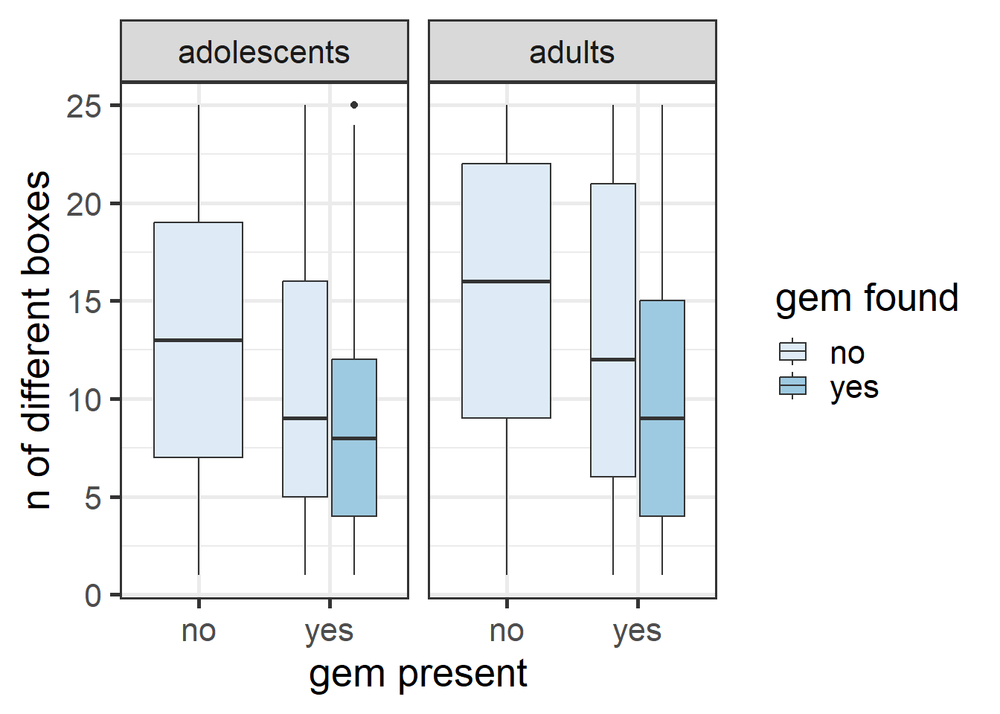
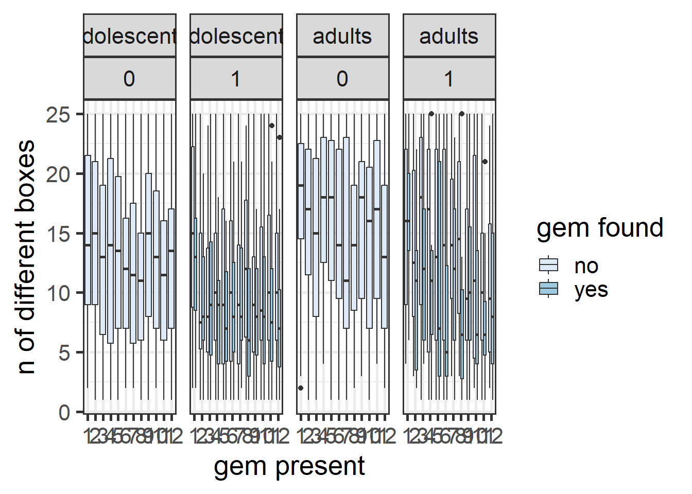
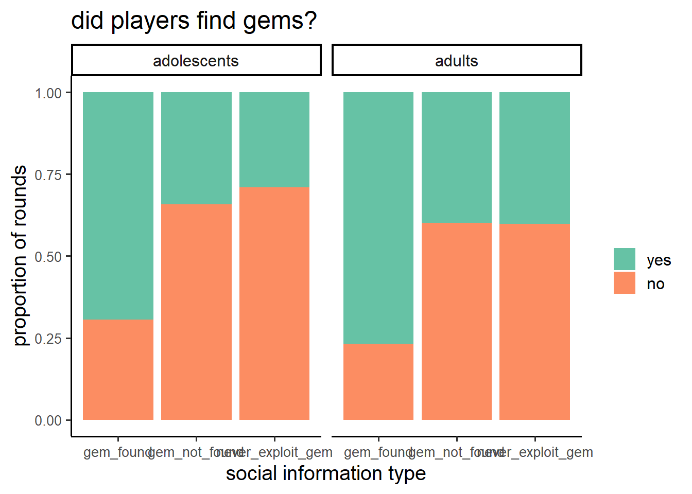

Linear mixed model fit by REML. t-tests use Satterthwaite's method [
lmerModLmerTest]
Formula: boxes_opened ~ group * demo_type + (1 | uniqueID)
Data: boxes_data
REML criterion at convergence: 19974.5
Scaled residuals:
Min 1Q Median 3Q Max
-3.6475 -0.6244 0.0047 0.5765 3.6158
Random effects:
Groups Name Variance Std.Dev.
uniqueID (Intercept) 28.42 5.331
Residual 25.27 5.027
Number of obs: 3174, groups: uniqueID, 275
Fixed effects:
Estimate Std. Error df
(Intercept) 10.5323 0.4755 403.6347
groupadults 3.4157 0.7509 401.7668
demo_typegem_not_found 0.8332 0.3274 2892.8830
demo_typenever_exploit_gem 0.9792 0.3697 2893.5409
demo_typenever_exploit_no_gem 2.3191 0.4607 2892.4911
demo_typeno_gem 2.4279 0.3281 2892.9630
groupadults:demo_typegem_not_found -0.7667 0.5145 2892.4162
groupadults:demo_typenever_exploit_gem -0.5162 0.5784 2892.7909
groupadults:demo_typenever_exploit_no_gem -1.7560 0.7286 2892.5095
groupadults:demo_typeno_gem -0.8518 0.5147 2892.4098
t value Pr(>|t|)
(Intercept) 22.151 < 2e-16 ***
groupadults 4.549 7.15e-06 ***
demo_typegem_not_found 2.545 0.01098 *
demo_typenever_exploit_gem 2.648 0.00813 **
demo_typenever_exploit_no_gem 5.034 5.11e-07 ***
demo_typeno_gem 7.400 1.77e-13 ***
groupadults:demo_typegem_not_found -1.490 0.13631
groupadults:demo_typenever_exploit_gem -0.892 0.37226
groupadults:demo_typenever_exploit_no_gem -2.410 0.01602 *
groupadults:demo_typeno_gem -1.655 0.09809 .
---
Signif. codes: 0 '***' 0.001 '**' 0.01 '*' 0.05 '.' 0.1 ' ' 1
Correlation of Fixed Effects:
(Intr) grpdlt dm_typg__ dm_typn__ dm____ dm_ty_
groupadults -0.633
dm_typgm_n_ -0.346 0.219
dm_typnvr__ -0.307 0.194 0.445
dm_typnv___ -0.246 0.156 0.357 0.316
dem_typn_gm -0.345 0.219 0.502 0.444 0.356
grpdlts:dm_typg__ 0.220 -0.345 -0.636 -0.283 -0.227 -0.319
grpdlts:dm_typn__ 0.196 -0.307 -0.285 -0.639 -0.202 -0.284
grpdlt:____ 0.156 -0.244 -0.226 -0.200 -0.632 -0.225
grpdlts:d__ 0.220 -0.345 -0.320 -0.283 -0.227 -0.637
grpdlts:dm_typg__ grpdlts:dm_typn__ g:____
groupadults
dm_typgm_n_
dm_typnvr__
dm_typnv___
dem_typn_gm
grpdlts:dm_typg__
grpdlts:dm_typn__ 0.448
grpdlt:____ 0.356 0.316
grpdlts:d__ 0.503 0.448 0.356

Linear mixed model fit by REML. t-tests use Satterthwaite's method [
lmerModLmerTest]
Formula: boxes_opened ~ group * round * gem_found + (1 | uniqueID)
Data: .
REML criterion at convergence: 19875.2
Scaled residuals:
Min 1Q Median 3Q Max
-3.6380 -0.6223 0.0041 0.6107 3.4079
Random effects:
Groups Name Variance Std.Dev.
uniqueID (Intercept) 29.74 5.454
Residual 24.18 4.918
Number of obs: 3174, groups: uniqueID, 275
Fixed effects:
Estimate Std. Error df t value Pr(>|t|)
(Intercept) 13.33020 0.52613 548.53745 25.336 < 2e-16
groupadults 3.35395 0.83340 552.27706 4.024 6.51e-05
round -0.14182 0.04164 2906.00179 -3.406 0.000669
gem_found -0.14376 0.58396 2932.02441 -0.246 0.805565
groupadults:round -0.12529 0.06680 2908.66210 -1.876 0.060804
groupadults:gem_found -0.45821 0.88039 2930.70176 -0.520 0.602778
round:gem_found -0.29620 0.07676 2928.48221 -3.859 0.000116
groupadults:round:gem_found 0.20962 0.11708 2932.58906 1.791 0.073474
(Intercept) ***
groupadults ***
round ***
gem_found
groupadults:round .
groupadults:gem_found
round:gem_found ***
groupadults:round:gem_found .
---
Signif. codes: 0 '***' 0.001 '**' 0.01 '*' 0.05 '.' 0.1 ' ' 1
Correlation of Fixed Effects:
(Intr) grpdlt round gm_fnd grpdl: grpd:_ rnd:g_
groupadults -0.631
round -0.529 0.334
gem_found -0.334 0.211 0.504
grpdlts:rnd 0.330 -0.529 -0.623 -0.314
grpdlts:gm_ 0.222 -0.352 -0.334 -0.663 0.531
rond:gm_fnd 0.304 -0.192 -0.573 -0.897 0.357 0.595
grpdlts:r:_ -0.199 0.320 0.376 0.588 -0.606 -0.894 -0.656


Social behavior
also add age here
do adults use more social info?
When are gems found

copy frequency by treatment and succes
when are gem found
people don’t copy exploit?